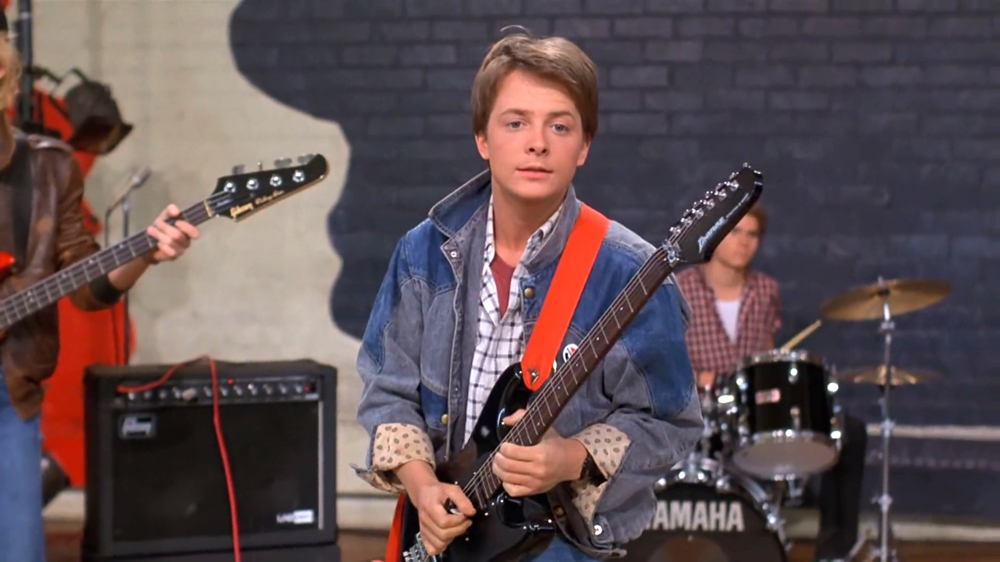

I recently graduated from a Web Development course at General Assembly where I increased my typing speed from 10 words per minute on my type writer to 100 words per minute on my new MacBook Pro. They also taught me how to be an awesome Web Developer. During my spare time, I enjoy playing guitar, skateboarding, playing Wild Gunmen at 7 Eleven, and hanging with Doc
Building a user friendly interface that is easy for beginner programmers to use and learn the benefits of git.
Reviewed, organize and filed multiple complaints to neighbors, local stores, and government officials. (self employed)
Influenced by Huey Lewis and the News, Tom Petty and the Heartbreakers, and Van Halen.
Cleaning out Doc's garage in exchange for beer and listening to records.